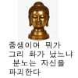
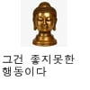

한국에 종교 분쟁이 없는 이유
댓글
신라시대부터 인민의 고혈을 짜먹은 업보임
업보라고하기에는 그 댓가를 너무 오래치르고 있잖아 ....
그냥 불교 그자체인듯
왜 개신교가 유독 이슬람에게 예민하게 구느냐? 성질이 비슷해서 뭔 짓을 할지 잘 알기 때문임
뿌리도 같고 ㅋㅋㅋ
그래도 이슬람은 좀..
개신교는 교리가 피라미드 영업이라서 그럼.
전도해서 집사 권사 등급 올리고 목사가 십일조 가져감.
분쟁이라 하면 양쪽이 맞붙어야 하는 건데
이건 한쪽에서 일방적으로 지랄하는 상황이라…
개인적으로 요즘 개신교도들 수도 줄어들고 특히 젊은 애들의 수가 줄어들고 있다는데
저 짓 벌인 사람들이 거기에 적지 않은 영향 끼쳤다고 생각함
어처구니 없게도 기독교 새끼들한테 저게 범죄가 아니기 때문임....
기독교 외의 다른 종교는 일단 종교가 아니며 기독교를 믿지 않는 사람들은 지옥에 가기 때문에 자기들이 기독교를 전파하여 이 무지몽매한 자들을 구원해야 하는게 자기들의 과제임.
당연히 인종차별보다 더한 선민사상이 생기기마련이지.....
아 그래서 이슬람하고 쌍으로 개지랄 하는 군아 역시 사막집신
이건 또 뭔... 병신같은소리좀 그만해라 그지랄하는애들이 병신인거지 근대 대부분병신인거임ㅋ
예수랑 상상으로 합의 하면 무죈데?
아니야
십일조 내고 꽤 열심히 기도하긴하더라 ...
악의축들 그렇게 빠는 예수곁으로 한시바삐 가라
참는게 멀리보면 더좋을듯
선교 박해 프레임 퍼지면 정말 큰일남 ㄷㄷ
저새끼들 지랄을 더해야 신도들이 더 줄텐데 요즘은 잘없네
일방적 개지랄 ㅋㅋ
저지랄하면서도 지들끼리도 너이단 너이단 너사이비 이러면서 인민재판갈김
그야 대한민국은 '개인총기소지불법'이기 때문이지..
진짜 천애고아다 ㅅㅂ
저지랄하고 지들 욕먹으면 박해받는다며 염병함
순수하게 자기 종교를 믿는사람 말고
자기 종교만 믿으라, 타교를 핍박하는 놈년들은
1순위로 지옥갈거같다
독재자랑 마인드가 다를바가 없어


ㄹㅇ 무교입장에선 개독은 ㅈㄴ 비호감이고 불교는 호감임
종교를 믿는 사람들은 이런 현실을 외면하고 안보는 사람들이지?
종교가 착한맛 순한맛이 어딧냐 그냥 다 쓰레기들이지 애가 좀더 낫다 이러고잇네 ㅋㅋ
개독이 똥을 싸고 있는데 가만히 참고 있는 불교도 왜 같이 욕먹냐?
사람이 착한놈 나쁜놈이 어디있냐 다 조두순같은 새끼지 하면 넌 받아들이냐?
조선때부터 내려온 유구한 전통 아님?
숭유억불로 줘터짐이 익숙한 종교라
걍 ㅌㅌ 다니는거지